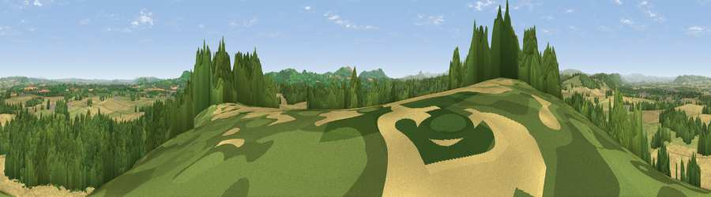

Viewpoint near Thruxton
#6252 in England · top 19% of its area beats it · near Thruxton · access?Where it is
The exact computed spot (SO 43125 33575). Click the marker for map links.
Public access: no public right of way or access land is recorded at this exact spot — it may be on private land. Computed from Natural England's CRoW access layer and OpenStreetMap rights of way — not the legal definitive map. Always verify locally.
The view, rendered

A 360° render of this exact spot computed from the terrain model, tree cover and land cover — summer colours, afternoon light, calibrated against photographs of famous viewpoints. Real trees, hedges and buildings will differ in detail.
The panorama
Grey silhouette: terrain skyline in each direction (720 bearings, Earth curvature and refraction included). Dashed green: skyline with trees (+15 m) and buildings (+8 m) as obstacles. Blue strip: how far the ground is visible on each bearing.
Where the view opens
Wedge length = distance to the farthest visible ground on that bearing (vegetation-aware). Rings at 10, 25 and 50 km.
What fills the view
41% cropland · 31% woodland · 27% grassland ·
Angular shares of the visible panorama (visual magnitude), not map area. Landscape diversity 0.48 (0–1 Shannon).
Key numbers
More beautiful places nearby
The staircase of upgrades: each row has a higher view potential than everything closer. Driving times are estimates from straight-line distance, calibrated against real road routing — check an actual route before setting out.
| Place | Direction | Drive | Score |
|---|---|---|---|
| Viewpoint near Cockyard | W · 2 km | ~5 min | 70.3 |
| Newbarns Hill | WNW · 5 km | ~11 min | 72.8 |
| Viewpoint near Orcop Hill | SSE · 6 km | ~13 min | 78.7 |
| Viewpoint near Orcop Hill | SSE · 6 km | ~13 min | 80.7 |
| Garway Hill | S · 9 km | ~17 min | 84.6 |
| Millennium Hill | E · 33 km | ~51 min | 86.9 |
| Worcestershire Beacon | ENE · 36 km | ~54 min | 87.1 |
| Viewpoint near West Quantoxhead | SSW · 96 km | ~121 min | 87.9 |
51.99769, -2.82982 · source: screening · position refined by local search. Computed location — check access rights before visiting.